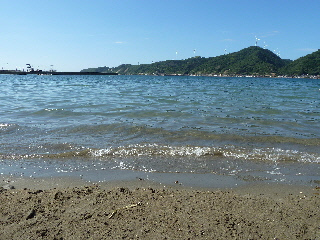

河下港に中型掃海艇「いずしま」っていうのがいました。
2012/08/05
河下港に今年は「いずしま」っていうのが来ました。
はしごのような狭い階段を、登ったり降りたりしながら見学させてもらいました。
船の高い所に望遠鏡があったんですが、遠くがとても綺麗に見えました。
これはデジカメの写真ですが、望遠鏡でみたら、風車に書いてある字もみえました。
レンズがとてもクリアな感じで、見やすかったです。

8月の最初の日曜ってことで、河下の海水浴場では海水浴の人も多かったです。
波がおだやかで、泳ぎやすそうでした。